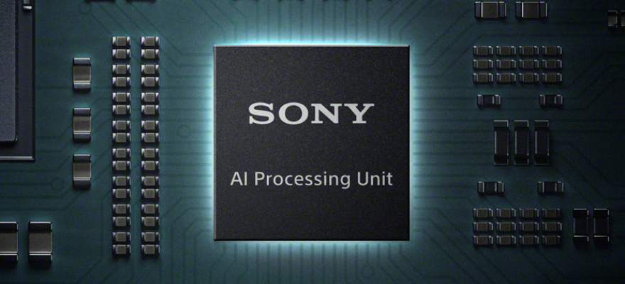

4K PTZ Camera
Professional
R9-420F
RED LINE
BOLIN R9-420F는 스튜디오 방송, 라이브 프로덕션 및 전문 AV 애플리케이션용으로 설계된 고성능 전문가용 PTZ 카메라입니다, 부드러운 움직임과 최적화된 화질을 위해 설계되었으며 초당 최대 60프레임의 4K 해상도를 제공하여 라이브 이벤트, 스포츠 중계, 기업 프로덕션, 스튜디오와 같은 환경에서 부드러운 영상 촬영을 보장합니다.
Red Line 시리즈
고품질, 저지연성, 저대역폭 IP 스트림을 제공하여 원격 프로덕션, 클라우드 스트리밍 및 하이브리드 방송 애플리케이션에 적합합니다.
-
R9-418F
1 Inch 4K Sony Image Block
18X Zoom Range
4K30(2160p29.97)
Full HD (1080/i59.94/p60)
6G-SDI + SFP-SDI+HDMI+IP
FAST HEVC
Ultra Low Latency
Low Bandwidth
FreeD Supported
-
R9-230H
30X Zoom Range
Sony Image Block
Full HD (1080/i59.94/p60)
3G-SDI + SFP-SDI+HDMI+IP
Standard AVC/HEVC
Super Image Stabilizer
Low Light Performance
FreeD Supported
-
R9-420F
20X Zoom Range
Sony Image Sensor
4K60
12G-SDI + SFP-SDI+HDMI2.0+IP
FAST HEVC
Ultra Low Latency
Low Bandwidth
FreeD Supported
Sony Image Sensor
20배 줌은 광각 및 근거리 촬영 모두에서 선명도를 유지하고, 고급 이미지 신호 처리(ISP) 엔진은 색상 정확도와 저조도 성능을 향상시킵니다.

Zoom Range
20배 줌은 광각 및 근거리 촬영 모두에서 선명도를 유지하고, 고급 이미지 신호 처리(ISP) 엔진은 색상 정확도와 저조도 성능을 향상시킵니다.